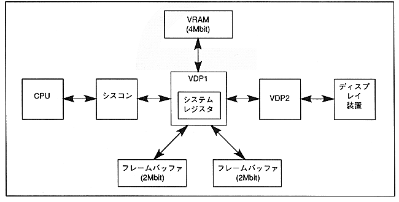

VRAM (4Mbit DRAM) and two frame buffers (2Mbit DRAM per side) are connected to VDP1. Image data is defined from the CPU to VRAM and output to the display device via the frame buffer.
The drawing data is sent from the CPU to VDP1 via the syscon (system control IC) and written to VRAM. Parts written in VRAM are drawn in the frame buffer in 16 or 8bit / pixel format. The drawn frame buffer data is displayed on the display device via the priority circuit in VDP2. The priority circuit determines the priority between the scroll plane and the priority plane. There are two frame buffers, and drawing and display are switched for each frame.
∙ Information that controls drawing is set in the system register of VDP1 from the CPU via the syscon. System registers control drawing.
Figure 1.1 System configuration
